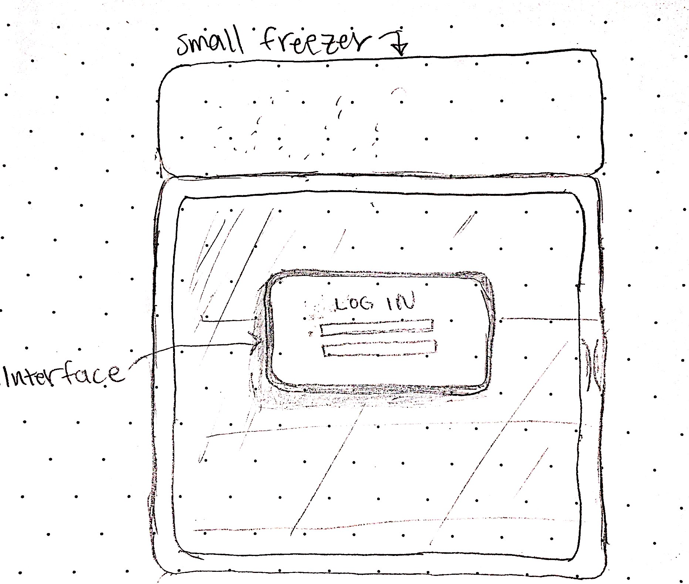
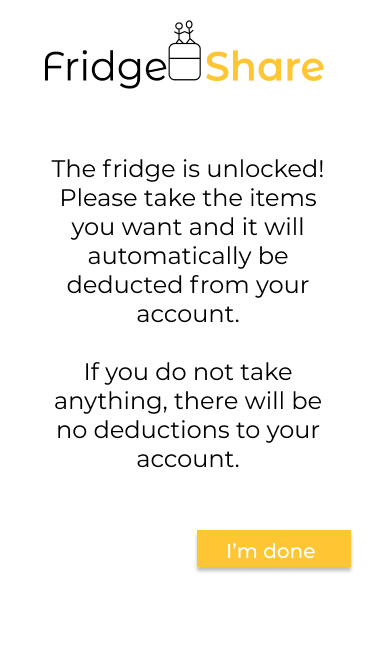

Project Overview
This was a project for my design class. My team (shoutout to Rose, Lianne, and Sean) and I created FridgeShare, a community fridge shared by students living on college campuses.
My contribution
We collaborated equally on every step, and by the end of the class, we had a business model canvas and a mid-fidelity prototype of the fridge’s interface. A few months later, I decided to keep working on this project by designing a mockup of the app as well.
Problem
Let's talk about food waste
I’ve lived in my off-campus apartment for two years now. As I adjusted to having to buy groceries to cook, I’ve noticed that I end up throwing away a lot of food because I overbuy or forget about it when it gets lost in the fridge. Many college students can relate to this. The goal is create an alternative solution to try to break this pattern.
General Problem Statement
Food waste is detrimental to our society — it is a waste of money and damages the environment. We hoped to create a solution that encourages individuals to recognize the consequences and gives them an alternative to throwing food away.
Research
Goal
To understand why people end up wasting food, and what methods are used to try to prevent it.
Interviews
Each of us interviewed two individuals of different levels of expertise in food waste. I interviewed a member of a food sustainability organization, “Berkeley Food Collective”, as well as an employee of a local restaurant.
Secondary Research
I researched existing food waste initiatives to find out what has been successful.
Insights
From our research, we discovered:
- 1. Students tend to forget about the monetary meaning of food after the purchase.
- 2. Having extra food at home makes people feel safe.
- 3. People tend to waste less food if they think they’re being socially judged.
HMW?
On reflection, we realizes that realistically, students would likely not change their buying habits by themselves, due to time constrictions and unstable finances as a college student.
So, the question is:
How Might We make students be more conscious of their food disposal habits?
Ideation
This is our team board showcasing our process towards reaching the solution.
Solution

FridgeShare is a community fridge installed in a student apartment complex.
- Logistics: Students sign up to join and share any extra food that they realize they have too much of. It employs a credit-based system.
- Quality Control: There would be weekly quality checkups of the fridge and the food. This could be done by a landlord or RA.
Why a community fridge?
A community fridge with a credit system keeps students accountable and implements a reward system. This not only encourages individuals to improve, but also forces group effort into decreasing food waste. Communities that have implemented similar initiatives (such as
Hubbub in the United Kingdom) have seen encouraging results.
Prototyping

Both the Share page will prompt you to classify your item into these groups.
The Take page shows you current foods in the fridge, the person who shared it, and the cost. By showing the person who shared it, it keeps users accountable for not sharing rotten foods. One of our insights was that "people will waste food less when they feel judged in a social environment."
Request form -- these requests will be published on the existing requests page that users can receive notifications for.
The existing requests page.

For safety, the fridge is locked until a trusted user is using it.
You are able to anonymously report any users that shared inedible or dangerous foods. A supervisor (such as a landlord or RA) can check up on this report. If a user is reported 3 times, they are ineligible to use the community fridge.
Use in full screen for best experience: